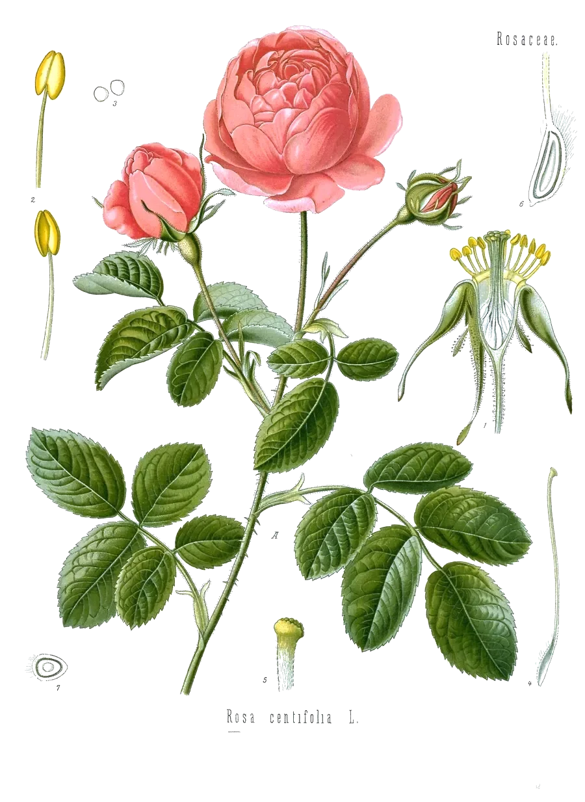

After the geranium. An open chain ending in an –OH group. Bees make it too: it is part of the scent they use to mark the hive entrance.
- Scent
- floral, rose-like, softly citrus, sweet Reference description: “sweet rose odor” (HSDB)
- Found in
- rose, geranium, palmarosa, lemongrass, citronella, neroli, coriander, blueberry.
- In our honeys
- Sunshine Soothing Berry as a flavouring ingredient; amount not published
- In food
- Evaluated as a flavouring in 2003 by JECFA, the FAO/WHO expert committee on food additives: no safety concern at current levels of intake when used as a flavouring agent. Its entry in the JECFA database
- Molar mass
- 154.25 g/mol
- Boiling point
- 229–230 °C HSDB, HMDB
- CAS number
- 106-24-1
- FEMA number
- 2507
- Record
- PubChem 637566
- Systematic name
- (2E)-3,7-dimethylocta-2,6-dien-1-ol
What has been studied So far: animals
- ReviewA 2019 pharmacology review summarizes cell and animal work on inflammation, oxidation and microbes.17
- Not knownWhat eating it does. No trial of swallowed geraniol is cited here.